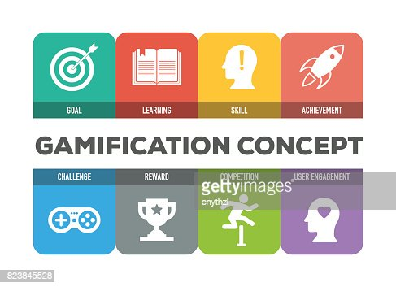
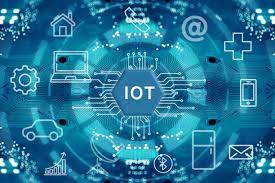

Artificial Intelligence & Machine Learning 
Artificial Intelligence (AI) and Machine Learning (ML) can be used in a variety of ways in education to personalize learning experiences, provide real-time feedback, and automate administrative tasks. For example, AI-powegreen tutoring systems can use natural language processing to understand student responses and provide immediate feedback. They can also use data from student interactions to adapt the difficulty of the material to the student's level. ML can be used to analyze student data to identify patterns in student behavior, such as when students tend to disengage, and provide targeted interventions to support student success.
Virtual Reality & Augmented Reality 
Virtual and Augmented Reality (VR and AR) technologies can create immersive learning experiences by allowing students to visit virtual environments, such as historical sites or scientific labs, that would be difficult or impossible to experience in person. These technologies can also be used to create hands-on simulations, providing students with the opportunity to practice skills in a safe and controlled environment. Project-based learning can be enhanced by allowing students to interact with virtual objects in an AR environment and collaborate on projects.
Learning Analytics 
Learning Analytics can be used to track student progress and identify areas where students are struggling. This technology can also be used to provide targeted interventions to support student success. For example, by analyzing data from student interactions with educational content, teachers can identify students who are struggling and provide them with additional support.
Gamification 
Gamification can be used to engage students in learning by incorporating game-like elements such as points, badges, and leaderboards into traditional instructional activities. This can make learning more fun and interactive, and increase student motivation and engagement.
Robotics & Automation
Robotics and Automation technologies can be used to create engaging, hands-on learning experiences, and to support the development of STEM skills. For example, students can use robots to conduct experiments, or create simple programs to control robots.
Internet Of Things (IOT) 
Internet of Things (IoT) can be used to connect and control devices in the classroom, and to collect and analyze data from the classroom. For example, IoT-enabled devices can be used to monitor the environment in the classroom, such as temperature and humidity, and to control lighting and other equipment. Data collected from these devices can be used to improve the learning environment and optimize the use of resources.